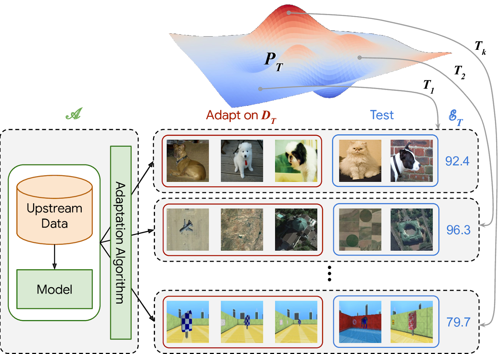
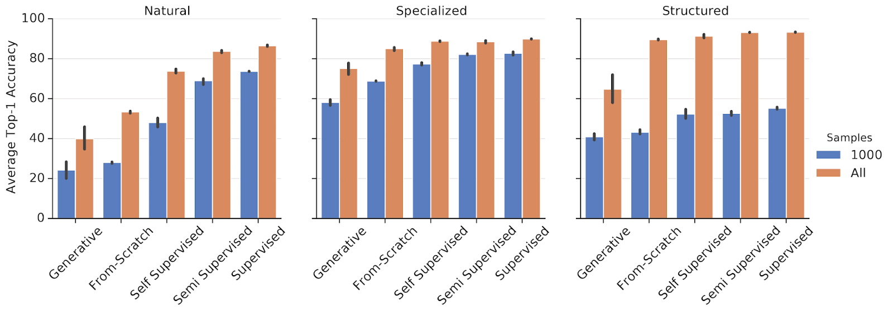

Transfer learning in Deep learning
由于loss的非凸性、type的不同，造成Transfer learning在不同的数据、task上表现并没有规律性。

The Visual Task Adaptation Benchmark
VTAB基于多种数据、多种任务之间的Transfer learning。
当数据量增加的时候，从scratch训练，不会有performance的损失。

Pretained models
不能想当然的认为pretained models是有用的，参考1，主要的问题有：
-
不同的task
-
数据有很大的difference，如果不能share feature，那么不会有什么好处
-
pretained models是local optima，所以会有bias
当然，也可以用pretained models做初始值，最后的结果基本也会差不多2。也有文章证明即使是training from scratch3，结果也不会差很多4。
Footnotes
-
https://news.ycombinator.com/item?id=33067056. ↩
-
https://stackoverflow.com/questions/65982245/pretrained-model-or-training-from-scratch-for-object-detection. ↩
-
https://arxiv.org/abs/1811.08883. ↩
-
https://heartbeat.comet.ml/pre-trained-machine-learning-models-vs-models-trained-from-scratch-63e079ed648f. ↩